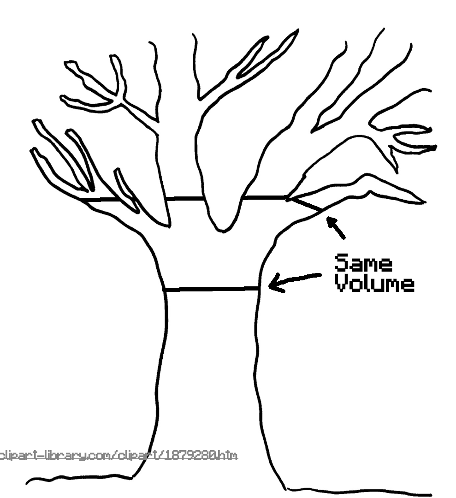
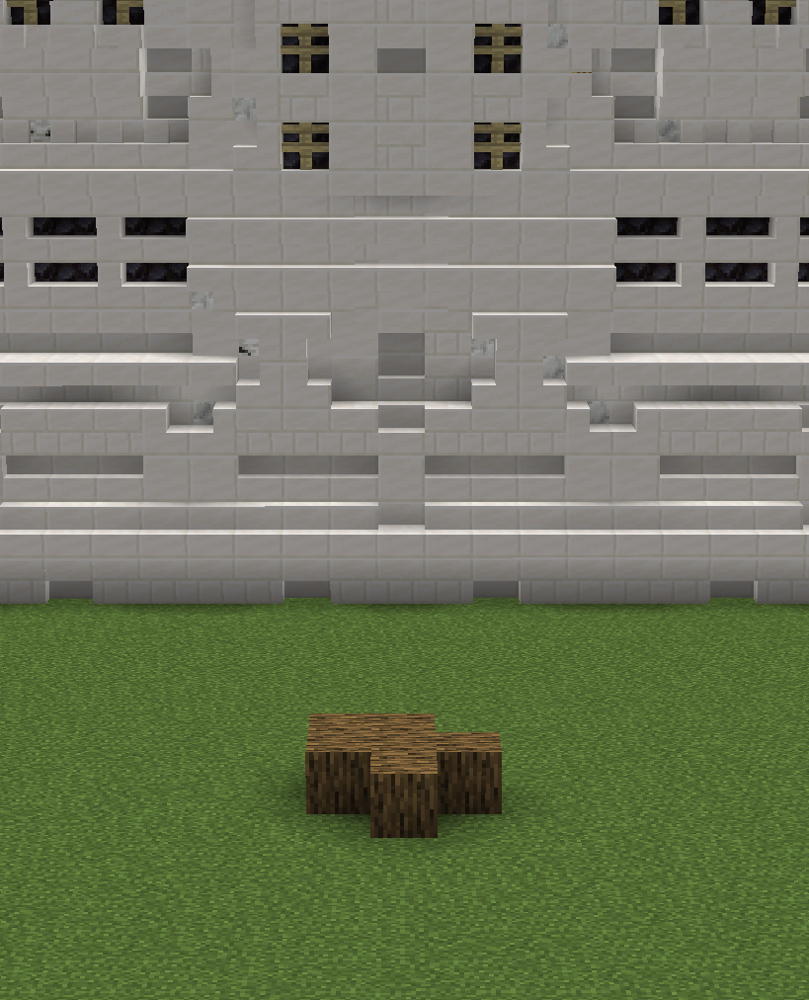
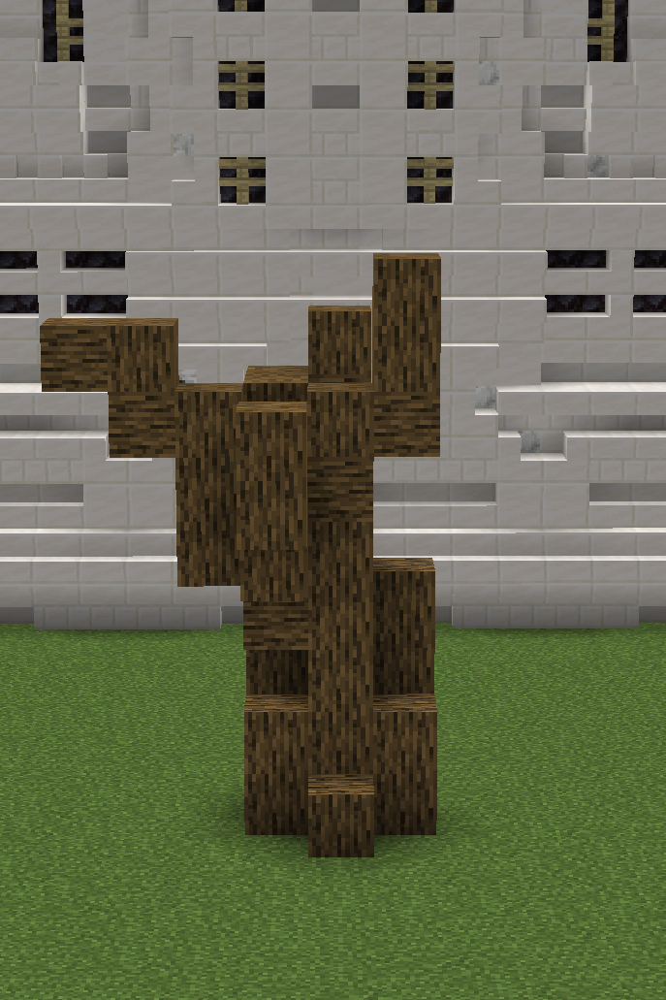
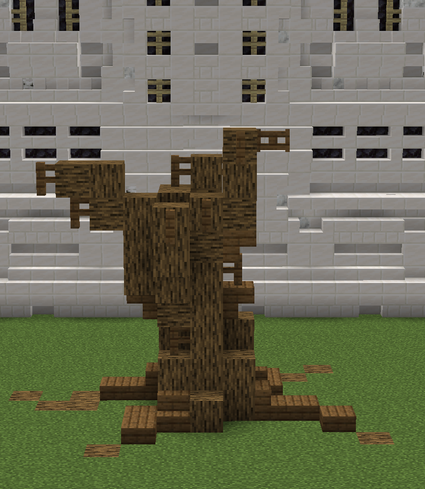
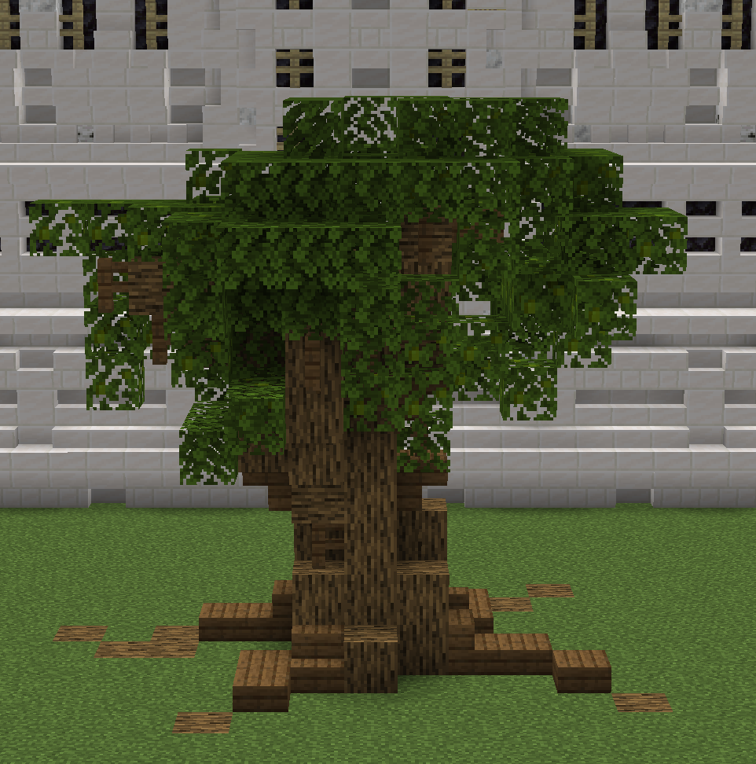
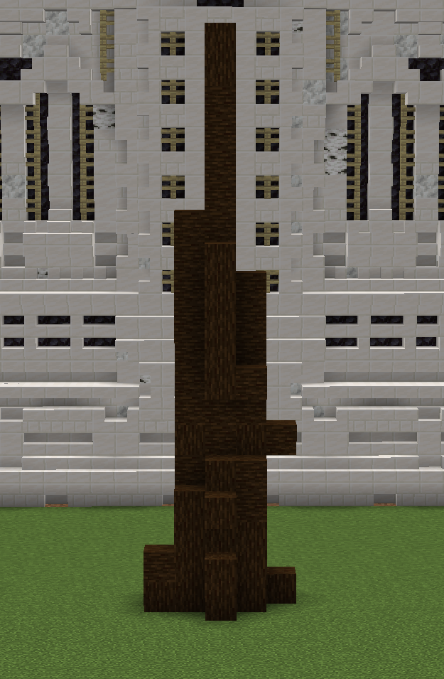
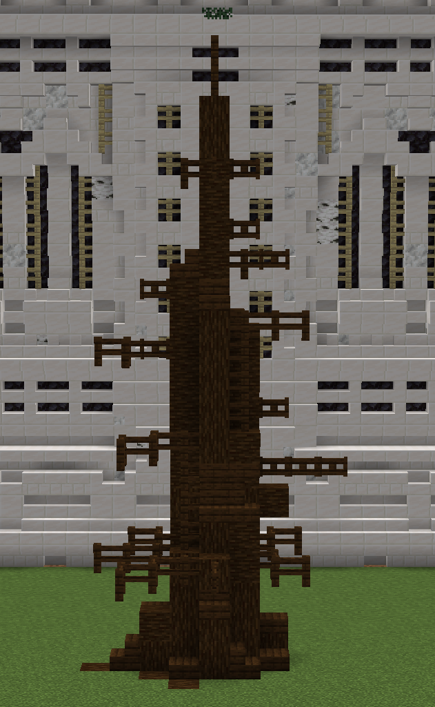
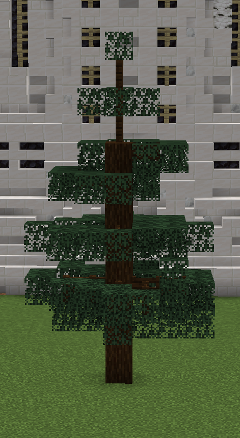

An important thing to note is that tree trunks have the same volume of wood from start to finish, it just divides into more parts. See image below.
Oak
- Decide the size
- DON'T keep it simple
- Details
- WOOHOO LEAVES YEAAHH!
The size of the base should be pretty constant throught the whole trunk.
Build out the structure of the tree, then thicken it to be the right size.
Make it interesting with twists and turns.
Add roots at the bottom to slightly expand the base of the tree. Roots are often more above ground toward the opposite side the tree is leaning
Add fences and fence gates where smaller branches for more detail. Use stairs and slabs for rounding to make the tree look more natural.
Add leaves loosely connected to you branches with larger clumps around larger branches.
Leaves on Oak trees are generally fluffy round shapes. I used a noise brush with Axiom
You can use several different types of leaves in the same tree. Here I used Oak and Jungle leaves.
Spruce
- Start with Structure
- Details
- LEAAAVVES ! !
Spruce trees are straight and tall so no need for anything too crazy. The trunk of the tree should be a cone shape, gradually getting thinner the higher up.
Since Spruce trees grow straight up, roots wont be very visible. Smooth with stairs, slabs, and fences. Add branches using; more wood, fences, and fence gates sticking out of the base, getting shorter the thinner the trunk gets.
Start from the top with only a one block layer and gradually add more leaves per lever. Leave(s) space between each layer of leaves.

Another example of a spruce tree:
